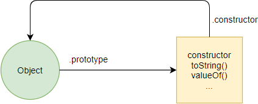
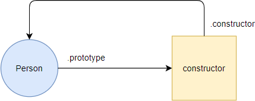
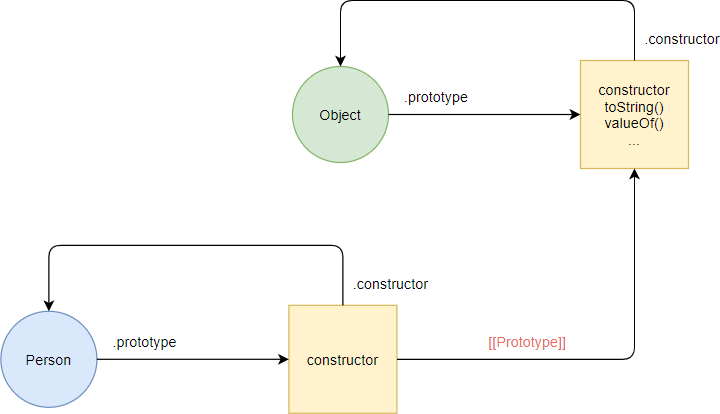

Suponha que um círculo represente uma função e um quadrado represente um objeto.
Exemplo: A figura a seguir ilustra as relações entre a Object() função e o Object.prototype objeto:
Nos bastidores, o JavaScript cria uma nova função Person() e um objeto anônimo:
O JavaScript vincula o Person.prototype objeto ao Object.prototype objeto via [[Prototype]], o que é conhecido como vinculação de protótipo. A ligação do protótipo é denotada por [[Prototype]] na figura a seguir:
